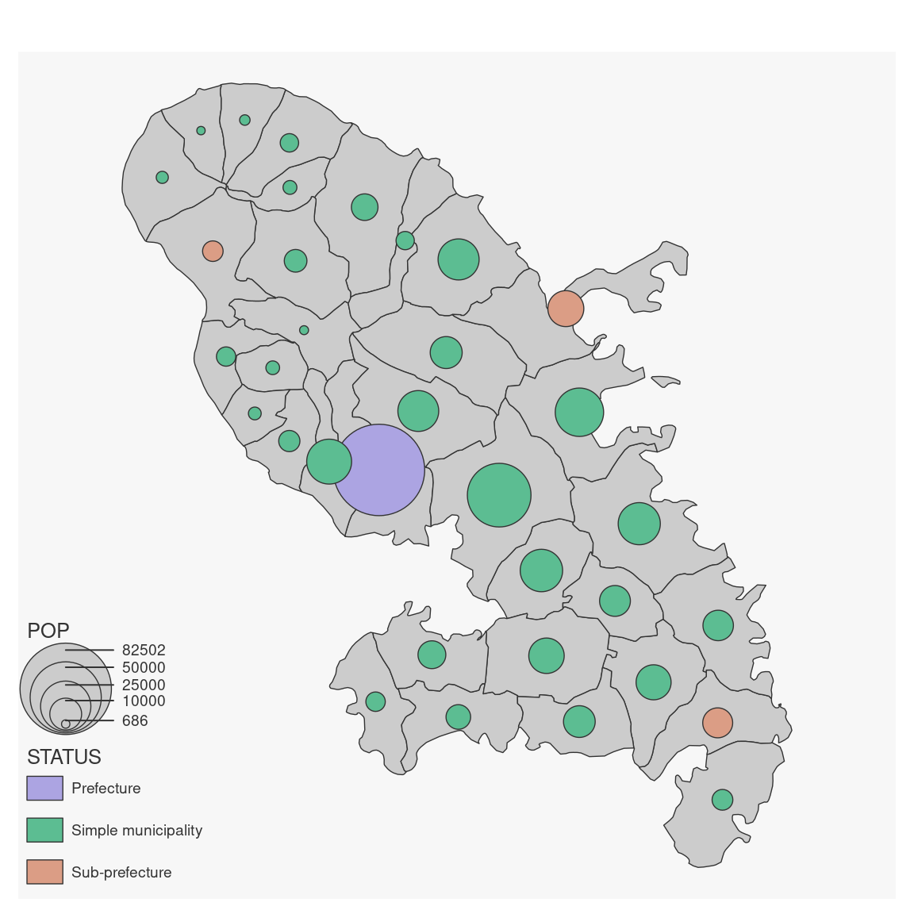
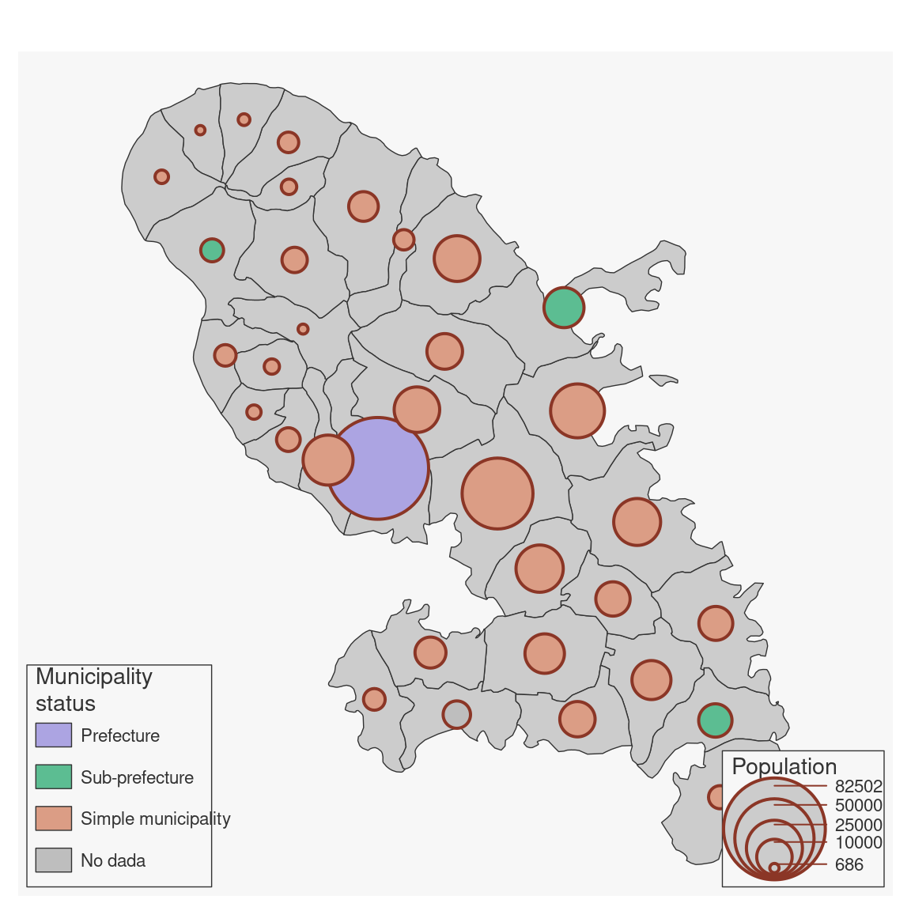

Plot proportional symbols with colors based on qualitative data.
Usage
mf_prop_typo(
x,
var,
inches = 0.3,
val_max,
symbol = "circle",
pal = "Dynamic",
alpha = 1,
rev = FALSE,
val_order,
border = getOption("mapsf.fg"),
lwd = 0.7,
lwd_max = 15,
col_na = "white",
leg_pos = mf_get_leg_pos(x, 1),
leg_title = var,
leg_title_cex = c(0.8, 0.8),
leg_val_cex = c(0.6, 0.6),
leg_val_rnd = c(0),
leg_no_data = "No data",
leg_frame = c(FALSE, FALSE),
leg_frame_border = getOption("mapsf.fg"),
leg_horiz = FALSE,
leg_adj = c(0, 0),
leg_fg = getOption("mapsf.fg"),
leg_bg = getOption("mapsf.bg"),
leg_size = 1,
leg_box_border = getOption("mapsf.fg"),
leg_box_cex = c(1, 1),
add = TRUE
)Arguments
- x
object of class
sf- var
name(s) of the variable(s) to plot
- inches
size of the biggest symbol (radius for circles, half width for squares) in inches.
- val_max
maximum value used for proportional symbols
- symbol
type of symbols, 'circle' or 'square'
- pal
a set of colors or a palette name (from hcl.colors)
- alpha
if
palis a hcl.colors palette name, the alpha-transparency level in the range [0,1]- rev
if
palis a hcl.colors palette name, whether the ordering of the colors should be reversed (TRUE) or not (FALSE)- val_order
values order, a character vector that matches var modalities
- border
border color
- lwd
border width
- lwd_max
line width of the largest line
- col_na
color for missing values
- leg_pos
position of the legend, two of 'topleft', 'top','topright', 'right','bottomright', 'bottom', 'bottomleft', 'left' or a vector of two coordinates in map units (c(x, y)). leg_pos argument can be c('position', 'position'), c('position', x2, y2), c(x1,y1, 'position') or c(x1, y1, x2, y2). Use NA to avoid plotting the legend, use 'interactive' to choose thelegend position interactively.
- leg_title
legend title
- leg_title_cex
size of the legend title
- leg_val_cex
size of the values in the legend
- leg_val_rnd
number of decimal places of the values in the legend
- leg_no_data
label for missing values
- leg_frame
whether to add a frame to the legend (TRUE) or not (FALSE)
- leg_horiz
display the legend horizontally (for proportional symbols and choropleth types)
- leg_adj
adjust the postion of the legend in x and y directions
- add
whether to add the layer to an existing plot (TRUE) or not (FALSE)
Examples
mtq <- mf_get_mtq()
mf_map(mtq)
mf_map(mtq, c("POP", "STATUS"), "prop_typo")

mtq[6, "STATUS"] <- NA
mf_map(mtq)
mf_map(
x = mtq, var = c("POP", "STATUS"), type = "prop_typo",
inches = .35, border = "tomato4",
val_max = 90000, symbol = "circle", col_na = "grey", pal = "Dynamic",
lwd = 2,
leg_pos = c("bottomright", "bottomleft"),
leg_title = c("Population", "Municipality\nstatus"),
leg_title_cex = c(0.9, 0.9),
leg_val_cex = c(.7, .7),
val_order = c("Prefecture", "Sub-prefecture", "Simple municipality"),
leg_no_data = "No dada",
leg_frame = c(TRUE, TRUE),
add = TRUE
)
